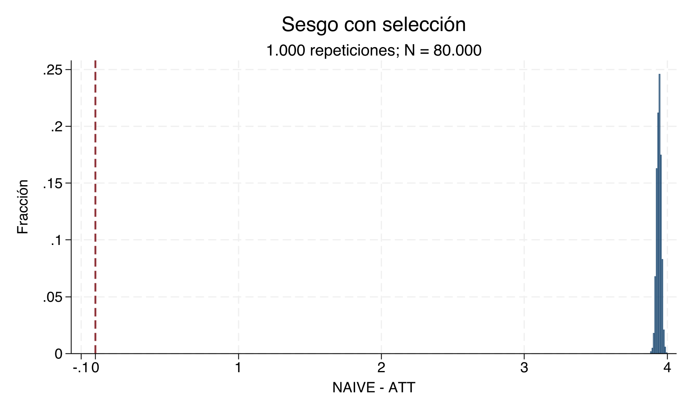
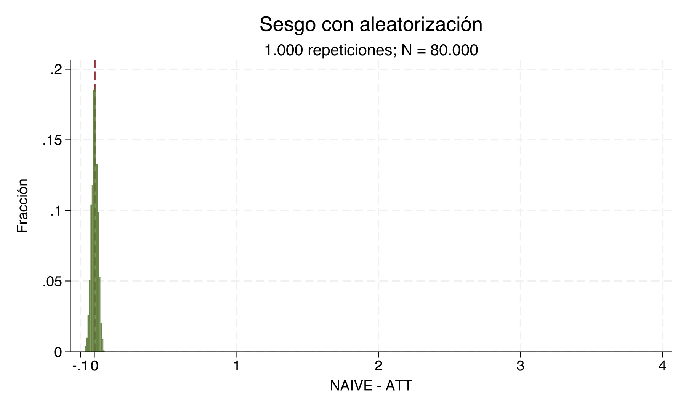
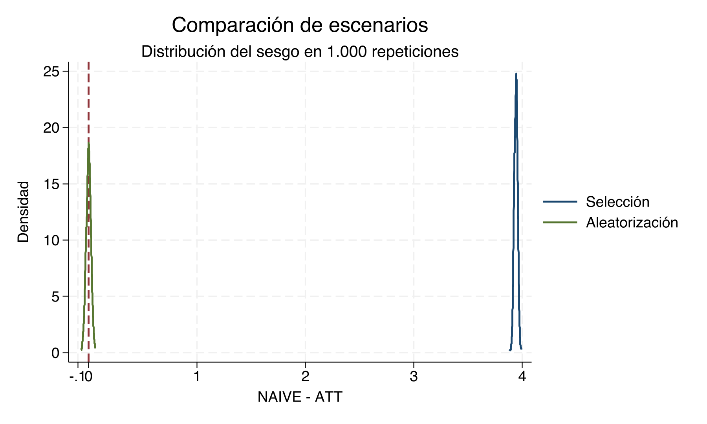

Capitulo 4 Parámetros Causales en Stata
{kind=link}
{kind=link}
{kind=link}
Objetivos
Al terminar este capítulo podrá:
- construir el resultado observado y el efecto individual a partir de resultados potenciales;
- estimar e interpretar ATE, ATT, ATU, CATE y la comparación naïve;
- separar precisión, sesgo de selección e identificación mediante simulaciones; y
- contrastar selección y aleatorización en una realización y en repetición.
Conocimientos previos. Se requiere manejar use, generate, summarize,
ttest y regresión lineal básica en Stata, además de las definiciones del
capítulo anterior sobre resultados potenciales y parámetros causales.
El objetivo es distinguir parámetros causales —ATE, ATT, ATU y CATE— de la diferencia observada entre tratados y controles. Los resultados que aparecen en esta página se leen directamente de los archivos producidos por el do-file.
4.1 Describir los datos y construir el resultado observado
4.1.1 Preparación de los datos
Comando clave
use "04_data.dta", clear
describe
generate X = (_n > 4)
generate y = D*yd1 + (1-D)*yd0
generate tau = yd1 - yd0
label variable X "Grupo pretratamiento"
label variable y "Resultado observado"
label variable tau "Efecto individual"
label define tratamiento 0 "Control" 1 "Tratados"
label values D tratamiento
label define grupo_pre 0 "Grupo A" 1 "Grupo B"
label values X grupo_pre
list, clean noobsSalida central. Se cargan 8 unidades. y selecciona el
resultado potencial compatible con D; tau conserva la diferencia causal
individual, observable aquí porque la base es didáctica.
Interpretación. describe revela estructura y etiquetas; list permite
auditar la construcción fila por fila. En datos reales nunca observamos a la
vez yd0 y yd1 para una misma persona.
4.1.2 Descripción por grupos
Comando clave
Salida central. Hay 4 unidades tratadas y 4
controles. Las medias de y son 11 y 4.25,
respectivamente.
Interpretación. La descripción muestra diferencias observadas; por sí sola no establece qué habría ocurrido al mismo conjunto de personas sin tratamiento.
4.2 Relacionar diferencia de medias y regresión
4.2.1 Diferencia de medias
Comando clave
Salida central. Stata reporta mean(0)-mean(1); la comparación causal que
usaremos, tratados menos controles, vale 6.75.
Error frecuente. Leer el renglón diff de ttest como tratados menos
controles. Con by(D), Stata muestra mean(0)-mean(1), cuyo signo es el opuesto
del coeficiente de D en la regresión con constante.
4.2.2 Regresión simple
Comando clave
Salida central. _b[_cons] reproduce 4.25 y _b[D]
reproduce 6.75. _se[D] y lincom D entregan el error
estándar robusto y el intervalo de confianza sin transcribirlos manualmente.
Interpretación. La equivalencia con la diferencia de medias es algebraica.
Ni robust ni un intervalo estrecho convierten el coeficiente en causal cuando
existe selección.
4.3 Calcular parámetros causales y heterogeneidad
4.3.1 Programa estimadores
Comando clave
capture program drop estimadores
program define estimadores
syntax varlist(min=3 max=3)
tokenize `varlist'
local tau `1'
local y `2'
local d `3'
quietly summarize `tau'
scalar ATE = r(mean)
quietly summarize `tau' if `d' == 1
scalar ATT = r(mean)
quietly summarize `tau' if `d' == 0
scalar ATU = r(mean)
display "ATE = " ATE
display "ATT = " ATT
display "ATU = " ATU
end
estimadores tau y DInterpretación. program define encapsula una tarea; syntax exige tres
variables; tokenize las numera; los local guardan sus nombres. Cada
summarize deja la media en r(mean), que se copia a un escalar para no perderla
cuando se ejecuta el siguiente comando. El argumento y mantiene una interfaz
pedagógica común, aunque estos tres estimandos se calculan con tau y D.
4.3.2 ATE, ATT, ATU y CATE
Comando clave
summarize tau
scalar ATE_directo = r(mean)
summarize tau if D == 1
scalar ATT_directo = r(mean)
summarize tau if D == 0
scalar ATU_directo = r(mean)
summarize tau if X == 0
scalar CATE_X0 = r(mean)
summarize tau if X == 1
scalar CATE_X1 = r(mean)
display ATE_directo ATT_directo ATU_directo CATE_X0 CATE_X1Salida central
| Estimando | Valor | N | |
|---|---|---|---|
| 41 | ATE | 0.75 | 8 |
| 42 | ATT | 0.75 | 8 |
| 43 | ATU | 0.75 | 8 |
| 44 | CATE(0) | 1.25 | 8 |
| 45 | CATE(1) | 0.25 | 8 |
| 55 | Naïve | 6.75 | 8 |
| 58 | Sesgo (Naïve − ATT) | 6.00 | 8 |
Interpretación. ATE, ATT y ATU son 0.75, 0.75 y 0.75. CATE(0) y CATE(1) son 1.25 y 0.25: el promedio agregado oculta heterogeneidad. Además, \(ATE=P(D=1)ATT+P(D=0)ATU\).
4.4 Duplicar observaciones no resuelve la selección
4.4.1 Duplicación de observaciones
Comando clave
Salida central
| Escenario | Estimando | Valor | N | |
|---|---|---|---|---|
| 1 | Aleatorización | ATE | 0.750 | 80000 |
| 2 | Aleatorización | ATT | 0.751 | 80000 |
| 3 | Aleatorización | ATU | 0.749 | 80000 |
| 15 | Aleatorización | Naïve | 0.751 | 80000 |
| 18 | Aleatorización | Sesgo (Naïve − ATT) | 0.000 | 80000 |
| 21 | Duplicación | ATE | 0.750 | 80000 |
| 22 | Duplicación | ATT | 0.750 | 80000 |
| 23 | Duplicación | ATU | 0.750 | 80000 |
| 35 | Duplicación | Naïve | 6.750 | 80000 |
| 38 | Duplicación | Sesgo (Naïve − ATT) | 6.000 | 80000 |
Error frecuente. Confundir el tamaño nominal, que pasa de 8 a 80,000, con información independiente. Las copias no aportan variación nueva: el sesgo permanece en 6.
4.5 Reasignar el tratamiento al azar
4.5.1 Asignación aleatoria
Comando clave
Salida central. Esta realización produce NAIVE igual a 0.751 y NAIVE−ATT igual a 0.
Interpretación. La semilla hace reproducible la realización. La aleatorización implica insesgadez al repetir el procedimiento; no exige que una muestra finita reproduzca exactamente el ATE 0.75.
4.6 Repetir el experimento: Monte Carlo
La población simulada contiene 80,000
perfiles. Cada llamada vuelve a asignar tratamiento, construye y y devuelve
NAIVE−ATT.
4.6.1 Monte Carlo con selección
Comando clave
capture program drop one_rep
program define one_rep, rclass
syntax, POPulation(string) SCENario(string)
use "`population'", clear
drop D
if "`scenario'" == "seleccion" {
quietly summarize yd0
generate D = (runiform() < invlogit((yd0-r(mean))/2))
}
else {
generate D = (runiform() < .5)
}
generate double y = D*yd1 + (1-D)*yd0
generate double tau = yd1-yd0
quietly summarize tau if D == 1
local att = r(mean)
quietly summarize y if D == 1
local y1 = r(mean)
quietly summarize y if D == 0
return scalar sesgo = `y1'-r(mean)-`att'
end
use "04_data.dta", clear
generate byte X = (_n > 4)
expand 10000
generate double y = D*yd1 + (1-D)*yd0
generate double tau = yd1-yd0
drop y tau
tempfile poblacion
save `poblacion', replace
simulate sesgo=r(sesgo), reps(1000) seed(12345) nodots: one_rep, population("`poblacion'") scenario("seleccion")
summarize sesgo, detailInterpretación. invlogit((yd0-r(mean))/2) convierte el resultado potencial
sin tratamiento en una probabilidad entre cero y uno. Por eso D depende de
yd0. simulate guarda el escalar devuelto en cada una de
1,000 repeticiones; la semilla
fija la secuencia pseudoaleatoria.
4.6.2 Monte Carlo con aleatorización
Comando clave
Resultado clave. Bajo selección, el centro del sesgo es
3.941; bajo aleatorización es
0. La regla runiform()<.5 hace a D independiente
de los resultados potenciales, en expectativa.
4.6.3 Comparación gráfica
| Escenario | Repeticiones | Media | Desv. est. | p5 | p50 | p95 |
|---|---|---|---|---|---|---|
| Aleatorización | 1000 | 0.000 | 0.022 | -0.038 | 0.000 | 0.035 |
| Selección | 1000 | 3.941 | 0.016 | 3.915 | 3.941 | 3.966 |

Lectura guiada. El centro es 3.941, la desviación estándar 0.016 y el intervalo entre cuantiles va de 3.915 a 3.966. ¿Qué proporción visual de la masa queda a cada lado de cero? ¿Qué indica eso sobre sesgo sistemático?

Lectura guiada. El centro es 0, la desviación estándar 0.022 y los cuantiles son -0.038 y 0.035. ¿Por qué aparece masa a ambos lados de cero aunque cada realización no tenga sesgo exactamente nulo?

Resultado clave. Compare centro, dispersión, cuantiles y masa a cada lado de cero. La selección desplaza la distribución; la aleatorización la centra sin eliminar la variación muestral. ¿Cuál escenario es más disperso según las desviaciones estándar canónicas y por cuánto?
4.7 Ejercicios
S-P1 (5 puntos). Regresión y diferencia de medias. Considere el output de
regress y D, robust del capítulo. Interprete _b[_cons], _b[D], _se[D] y
el intervalo de confianza de lincom D. Explique la relación exacta entre
_b[D] y las dos medias de grupo, e indique por qué el coeficiente no tiene
automáticamente interpretación causal.
| Término | Coeficiente | Error estándar robusto | IC 95%: límite inferior | IC 95%: límite superior |
|---|---|---|---|---|
| Constante | 4.25 | 0.479 | 3.079 | 5.421 |
| D | 6.75 | 0.629 | 5.211 | 8.289 |
Comandos permitidos: regress y D, robust, lincom D y operaciones
aritméticas con las medias de los dos grupos.
Producto esperado: interpretación escrita de los cuatro componentes
solicitados y una igualdad que conecte el coeficiente de D con las medias.
S-P2 (6 puntos). Parámetros en seis unidades. Use la siguiente población didáctica. Calcule ATE, ATT, ATU, CATE(0), CATE(1), la comparación NAIVE y NAIVE−ATT. Muestre las fórmulas y las unidades que entran en cada promedio.
| id | X | D | \(Y_i(D=0)\) | \(Y_i(D=1)\) |
|---|---|---|---|---|
| 1 | 0 | 0 | 2 | 3 |
| 2 | 0 | 1 | 4 | 6 |
| 3 | 0 | 1 | 5 | 6 |
| 4 | 1 | 0 | 7 | 8 |
| 5 | 1 | 0 | 8 | 10 |
| 6 | 1 | 1 | 10 | 13 |
Comandos permitidos: generate, summarize con condiciones if y
operaciones aritméticas; también puede resolver los promedios a mano.
Producto esperado: tabla con los siete estimandos solicitados, sus fórmulas y las unidades incluidas en cada promedio.
S-P3 (6 puntos). Depuración de un programa. El siguiente código contiene cuatro errores que impiden calcular correctamente ATE, ATT y ATU. Identifique cada error, explique su consecuencia y escriba una versión ejecutable corregida.
program define estimadores
syntax varlist(min=2 max=3)
tokenize varlist
quietly summarize `1' if `3' == 1
scalar ATE = r(mean)
quietly summarize `1' if `3' == 1
scalar ATT = r(mean)
quietly summarize `1' if `3' == 1
scalar ATU = r(mean)
endComandos permitidos: program define, syntax, tokenize, locales,
summarize, escalares y display.
Producto esperado: listado numerado de los cuatro errores, explicación de su consecuencia y un programa Stata completo que ejecute sin errores.
S-P4 (7 puntos). Nueva regla de selección. Diseñe una regla donde la
probabilidad de tratamiento sea el complemento exacto de la regla canónica,
invlogit(-(yd0-r(mean))/2), y por tanto disminuya con yd0. Anticipe el signo
y el centro aproximado de NAIVE−ATT, y razone cómo cambiaría su dispersión frente
a la regla canónica. Escriba código Stata ejecutable que modifique one_rep, fije
una semilla, ejecute simulate y resuma la distribución.
Comandos permitidos: comandos del programa one_rep, invlogit(),
runiform(), set seed, simulate y summarize, detail.
Producto esperado: código Stata ejecutable y un párrafo que anticipe signo, centro y dispersión de la distribución frente a la regla canónica.
4.8 Síntesis
- Identificación: más datos no eliminan el sesgo de selección.
- Heterogeneidad: un ATE puede ocultar CATE distintos entre grupos.
- Precisión frente a sesgo: aumentar \(N\) puede reducir variabilidad sin acercar el estimador al parámetro causal.
- Aleatorización en expectativa: el sesgo promedio se centra cerca de cero, aunque cada realización conserve variabilidad muestral.
Puente al capítulo siguiente
El capítulo Experimentos aleatorios controlados usa esta misma lógica para mostrar cómo un diseño experimental identifica efectos causales y cómo se diagnostica el balance antes de estimarlos.